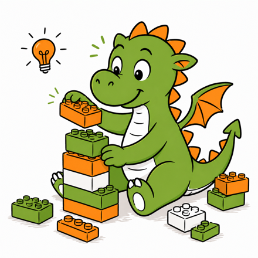

Wie KI ihre Antworten würfelt

KI sucht nicht. Sie rechnet – und würfelt. Generative KI wie ChatGPT schreibt ihre Antwort Stück für Stück. Für jedes einzelne Stück läuft dieselbe Kette ab. Deck sie hier Station für Station auf.
- 1 Zerlegen
- 2 Übersetzen
- 3 Rechnen
- 4 Abwägen
- 5 Würfeln
- > und wieder von vorn
Die KI hat schon angefangen zu schreiben: Unser Verein sucht dringend neue …
Welches Wort kommt als Nächstes?
Zerlegen
Die KI liest Text nicht Wort für Wort wie wir. Sie zerlegt ihn zuerst in Token: ganze Wörter, Wortstücke oder Satzzeichen. Häufige Wörter sind ein Token, seltene und lange Wörter werden zerschnitten.
6 Token für 5 Wörter: „dringend“ wird in zwei Stücke geteilt.
Für die KI ist Text eine Kette aus Bausteinen.
Vereinfacht: Echte Modelle schneiden etwas anders, je nach Modell. Ein Modell kennt meist rund 100.000 bis 200.000 solcher Bausteine. Deutsche Wörter werden öfter zerschnitten als englische.
Übersetzen
Rechnen kann die KI nur mit Zahlen. Deshalb übersetzt sie jedes Token in Zahlen.
Schritt 1: Jedes Token hat eine Nummer
Die KI hat eine feste Liste aller Token, die sie kennt – wie ein Wörterbuch mit rund 100.000 Einträgen. Jeder Eintrag hat eine Nummer. Die Nummer selbst bedeutet nichts. Sie sagt nur, wo das Token in der Liste steht.
Schritt 2: Zu jeder Nummer gehört ein Platz in einer Wortwolke
Beim Training hat die KI unvorstellbar viele Texte gelesen. Dabei hat sie für jedes Token Zahlen gelernt, die Gewichte. Sie legen fest, wo das Token in einer riesigen Wortwolke liegt. Token, die oft im gleichen Zusammenhang vorkommen, liegen nah beieinander: Sie sind eng verbunden. Token, die selten miteinander zu tun haben, liegen weit auseinander: Ihre Verbindung ist lose.
Zur Vereinfachung zeigen wir in der Wolke ganze Wörter. In echt hat jedes Token einen eigenen Platz – auch Wortstücke wie „dring“ und „end“. Tipp ein Wort an, um seine Verbindungen zu sehen.
So sieht der Platz in echt aus
Unsere Wolke hat zwei Richtungen: links–rechts und oben–unten. Die Wolke der KI hat Tausende. Darum besteht der Platz eines Tokens aus Tausenden Zahlen, einer langen Zahlenreihe. Bei einem kleinen Modell wie Llama 3.1 8B sind es 4.096 Zahlen pro Token, bei den größten Modellen über 10.000. Jedes Token hat gleich viele. Die Verbindungen sind also keine festen Fäden, sondern Rechenwerte: Je ähnlicher die Zahlenreihen zweier Token, desto enger ihre Verbindung.
Für die KI ist Bedeutung Nähe in einer Wolke aus Zahlen.
Rechnen
Bisher hat jedes Token nur seine eigene Zahlenreihe. „neue“ weiß also nur, dass es „neue“ ist – nicht, wer hier etwas Neues sucht. Das ändert sich jetzt, in drei Schritten.
Schritt 1: Zurückschauen (Attention)
Jedes Token schaut auf die Token vor sich und fragt: Wer von euch ist für mich wichtig? Dafür vergleicht die KI ihre Zahlenreihen. Passen zwei gut zusammen, übernimmt das Token viel vom anderen. Passen sie schlecht, übernimmt es fast nichts. Danach steckt in „neue“ auch etwas von „Verein“ und „sucht“.
Die Listen sind zur Veranschaulichung ausgedacht. In echt berechnet die KI die Wahrscheinlichkeiten erst nach der letzten Schicht (Station 4).
Schritt 2: Anreichern
Danach wird jede Zahlenreihe für sich mit weiteren gelernten Gewichten verrechnet. Dabei kommt hinzu, was die KI im Training gelernt hat – etwa, dass Vereine Mitglieder und Ehrenamtliche suchen. Das nächste Wort steht damit noch nicht fest.
Schritt 3: Wiederholen
Zurückschauen und Anreichern bilden zusammen eine Schicht. Ein kleines Modell wie Llama 3.1 8B hat 32 Schichten, die größten Modelle über hundert. Mit jeder Schicht passt die Zahlenreihe besser zum ganzen Satz. Erst nach der letzten Schicht berechnet die KI daraus, welches Token als Nächstes kommen könnte (Station 4).
Schon ein kleines Modell wie Llama 3.1 8B hat 8 Milliarden gelernte Zahlen in 32 Schichten. Für jedes einzelne Token braucht es rund 16 Milliarden Rechenschritte. Die großen Modelle hinter ChatGPT, Claude oder Gemini sind noch deutlich größer.
Diese Rechnung kann niemand Schritt für Schritt nachvollziehen – auch die Entwickler*innen nicht. Darum bezeichnet man generative KI auch als Black Box.
Abwägen
Am Ende der Rechnung steht keine Antwort, sondern eine Liste: Jedes Token aus dem Wörterbuch der KI bekommt eine Wahrscheinlichkeit, das nächste zu sein. Zusammen ergeben sie 100 Prozent. Diese Liste ist das Ergebnis aller Verbindungen: Je enger ein Token mit dem bisherigen Satz verbunden ist, desto höher seine Wahrscheinlichkeit.
Unser Verein sucht dringend neue …
… und rund 100.000 weitere Token mit fast 0 Prozent. In unserem Beispiel sind die wahrscheinlichsten Token ganze Wörter – deshalb sprechen wir ab hier von Wörtern.
Die KI weiß nicht, was stimmt. Sie berechnet, was wahrscheinlich als Nächstes kommt.
Würfeln
Jetzt kommt der Zufall: Die KI nimmt nicht immer das wahrscheinlichste Wort. Sie würfelt – aber nicht fair, sondern mit einem gezinkten Würfel, der öfter auf bestimmte Wörter fällt.
Stell dir dafür ein Glücksrad vor: Jedes mögliche Wort bekommt ein Stück. Wahrscheinliche Wörter bekommen große Stücke, seltene ganz schmale. Wo das Rad stehen bleibt, ist Zufall. Das gewonnene Wort wird angehängt, und die ganze Kette beginnt von vorn.
Das Rad steht noch.
Die Striche am Rand stehen für je 5 Prozent.
„Glücksrad drehen“ hängt ein Wort an. „20-mal drehen“ zählt nur mit, wo das Rad stehen bleibt – der Satz bleibt, wie er ist.
Gleicher Anfang, gleiche Rechnung – trotzdem andere Sätze. Das liegt nur am Zufall.
Mit der Temperatur legen die Anbieter fest, wie stark gewürfelt wird. Auf dem Glücksrad siehst du das sofort: Bei 0 gibt es nur noch ein einziges Stück, die KI nimmt immer das wahrscheinlichste Wort, die Antworten werden starr und wiederholen sich. Je höher die Temperatur, desto ähnlicher werden die Stücke und desto öfter gewinnen seltene Wörter – kreativer, aber auch fehleranfälliger. Chatbots arbeiten meist mit einer Einstellung zwischen 0,6 und 1. Ändern kannst du sie dort in der Regel nicht.
Eine KI-Antwort entsteht Token für Token – und jedes davon ist gewürfelt.
Was heißt das für dich?
Weil gewürfelt wird, antwortet die KI auf dieselbe Frage jedes Mal etwas anders. Lass dir ruhig mehrere Varianten geben und wähle aus.
Die KI wählt Wörter, die gut passen – nicht Wörter, die geprüft sind. Darum klingen falsche Antworten genauso überzeugend wie richtige. So entstehen Halluzinationen. Prüfe Fakten, Zahlen und Quellen selbst.
Alles, was du in den Prompt schreibst, fließt in die Rechnung ein und verschiebt die Stücke. Je klarer dein Kontext, desto eher bleibt das Rad bei dem stehen, was du brauchst.
Es berechnet nur das nächste Token. Suchen, Dateien lesen oder sich an frühere Chats erinnern übernehmen Programme rund um das Modell.
> Handout: Warum ChatGPT halluzinieren muss
> Handout: Bessere Prompts mit KLARO
Alle Zahlen und Wahrscheinlichkeiten auf dieser Seite sind zur Veranschaulichung vereinfacht oder ausgedacht. Das Prinzip stimmt. Die Angaben zu Llama 3.1 8B (8 Milliarden Gewichte, 32 Schichten) sind echt.
Angelehnt an die Visualisierung „Wie ein KI-Modell das nächste Wort findet“ der dsn group – dort ausführlicher und technischer, am Beispiel von Llama 3.1 8B.